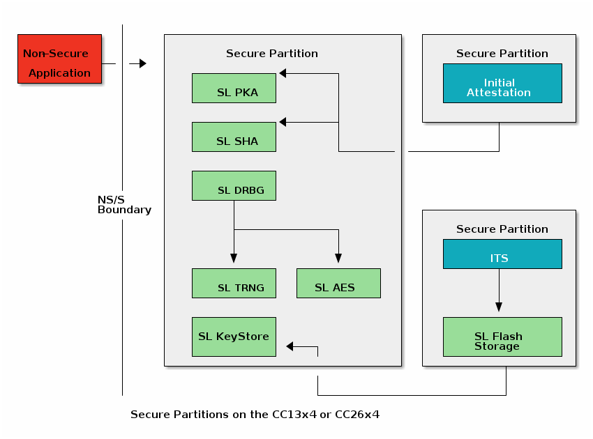

Trusted Firmware-M Implementation Overview¶
The following sections provide a high level overview of the security features of the CC13x4 and CC26x4 family of devices.
As described in the sec-device-overview, CC13x4 and CC26x4 use the Cortex-M33. This ARM core provides a critical security feature called ARM |reg| TrustZone |reg|. For more information, see ARM TrustZone Overview.
The security features provided by TI leverage Trusted Firmware M, an open-source reference implementation of the Platform Security Architecture (PSA) for the Cortex-M33 (amongst many others). This component directly interfaces with the Cortex-M33 to enable TrustZone and other important security features. For more information, see Trusted Firmware-M (TF-M).
The above components provide a trusted and protected execution context. This allows secure services to perform their work with the confidence that the run-time environment has not been compromised and the secrets are kept safe.
Important
Examples in the SimpleLink CC13xx/CC26xx SDK that support this secure configuration will have
tfm_ prefixes. For example, tfm_empty or tfm_aescbc.
ARM TrustZone Overview¶
ARM |reg| TrustZone |reg| technology provides fundamental security features, enabling developers to put security first in their design. Mainly, ARM |reg| TrustZone |reg| allows for hardware-enforced isolation by defining memory partitions.
For more information, see the following collateral:
The Technical Reference Manual for your device
The ARM Cortex-M33 defines a secure memory system with the following available memory regions:
Non-secure (NS) : memory that can be called by any software
Non-secure Callable (NSC) : secure memory that can be called by software executing in the NS region. Secure veneers located in the NSC region are used to execute software that resides in the secure memory partition
Secure (S) : protected memory that can only be called by software in the either the S memory partition or the NSC memory partition
For more information on the above memory regions, refer to the Secure Memory System and Memory Partitioning section of the Arm Cortex-M33 Devices Generic User Guide.
Trusted Firmware-M (TF-M)¶
Trusted Firmware M implements a secure environment executable on the ARM Cortex-M33 and aligns with Platform Security Architecture (PSA) guidelines. For CC13x4 or CC26x4 devices, the SimpleLink CC13xx/CC26xx SDK uses Trusted Firmware M which offers a PSA certifiable solution. Although this solution is not PSA certified, it inherits the certifiablity of the Trusted Firmware M, which offers up to PSA Level 2 isolation. For more information on certification, see the following reference page: PSA Certified Level 2.
The TF-M provides the following functionality:
Secure Partition Manager
Inter-process Communication (IPC) handler to handle calls to service modules
Cryptography (AES, SHA, EC) service including key storage
Internal Trusted Storage (ITS) service
Protected Storage (PS) service
The ITS is a Platform Security Architecture (PSA) Root of Trust (RoT) service for storing confidential security-critical data such as cryptographic keys. Our implementation will modify the ITS to add a Fletcher checksum to the filesystem metadata and data blocks for data integrity.
The SimpleLink CC13xx/CC26xx SDK provides a precompiled secure image file for CC13x4 or CC26x4 devices, which
includes the features listed above. The security enhancements provided in the
precompiled image take care of partitioning and other secure services by
leveraging the open-source Trusted Firmware M. The secure image tfm_s.axf and a secure
veneer file s_veneers.o are used by the non-secure application to access the
features available in the device’s secure region.
Available Crypto Functions¶
CC13x4 or CC26x4 devices offer the following secure crypto drivers:
AES (all modes: CBC, CCM, CMAC/CBC-MAC, CTR, ECB, GCM)
SHA2
DRBG
TRNG
ECDH
ECDSA
ECJPAKE
EDDSA
KeyStore
Secure Partitions Overview¶
Secure/Non-secure Software Architecture¶
The CC13x4 or CC26x4 family of devices support two configurations for application development:
tfm_disabled: the application is placed in secure memory partition
secure/non-secure configuration: the application is placed in a non-secure memory partition
The tfm_disabled configuration is not secure. That is, there is no partition between application software and the other secure elements on the device (i.e. key storage, crypto functions, etc). This configuration is vulnerable to malicious application software since the application can directly access secure elements, leaving them unprotected from malicious manipulation. This configuration provides a smaller memory footprint on CC13x4 or CC26x4 devices and the same look and feel as development on other devices that use ARM Cortex M4/M4F cores (see sec-cc13xx-cc26xx-hw-architecture).
Figure 235. Secure/Non-Secure Software Block Diagram¶
Figure 235. shows the division of the secure and non-secure domains in the secure/non-secure configuration.
Using ARM |reg| TrustZone |reg|, the secure and non-secure memory domains are hardware isolated regions. In this configuration, application developers are expected to develop their applications in the non-secure domain, while the secure domain is used for key storage and to securely perform cryptographic operations.
Figure 236. Simplified Secure/Non-Secure Software Block Diagram¶
Figure 236. above shows the following files:
example.out : the generated application image, placed in non-secure memory
s_image.axf : the pre-compiled secure image provided in the SimpleLink CC13xx/CC26xx SDK, placed in secure memory space
Secure Boot : in this context, this is MCUBoot. For more details, the see MCUboot Overview section of our User’s Guide.
Secure/Non-Secure Software Operation¶
The following diagram shows how a non-secure application performs an AES CCM operation. The details provided in this section are for reference only, as the secure drivers handle requests from the non-secure application, blocking, and executing callbacks as necessary. That is, the psa_calls shown below are executed by the secure TI driver and the application does not need to make calls to secure memory.
Figure 237. S/NS Block Diagram (AES CCM Example)¶
The non-secure application includes and invokes a non-secure driver, i.e. xx_ns. After setup, the non-secure application wishes to perform a crypto operation. Secure code is then invoked through a psa_call.
The secure service in the secure partition receives the request and processes it.
The secure Crypto driver begins the cryptographic operation.
At this point, the key storage mechanism is invoked by the secure driver to retrieve a key which will be used in the cryptographic operation.
The key is retrieved using a second psa_call to access a different isolated secure partition. Keys are stored in secure storage.
After obtaining the key, the cryptographic operation can continue, where the hardware accelerators on-board perform the AES operation.
Upon completion of the operation, a secure callback is invoked in the non-secure application. This completes the sequence, allowing the non-secure application to continue.
Secure Bootloader¶
Note
Trusted Firmware M offers secure boot services by leveraging MCUboot. The SimpleLink CC13xx/CC26xx SDK inclueds a secure bootloader using MCUboot directly that does not use the Trusted Firmware M version provided in the Trusted Firmware M repository.
For more information on this, see MCUboot Overview.